美容皮膚科 ／ 訴えを細胞から読み解く
たるみの多層構造各組織の加齢変化が、凹み・膨らみ・下垂になるまで
公開 2026-10-06
顔の形は、骨格と、その上に重なる脂肪・筋・皮膚によって作られています。靭帯や筋膜はこれらをつなぎ、顔の形を保っています。
加齢した顔には、上まぶたの被さりやくぼみ、目の下の凹みや膨らみ、鼻唇溝の深まり、下顎縁のもたつきが現れます。眼周囲から中・下顔面を中心に、各層と支持構造の変化が、こうした見た目にどうつながるかを説明します。
この章の一言
顔のたるみは、各層のボリュームロス、支持力の低下、皮膚の緩みや余剰が重なって生じます。
1 顔の輪郭を作る組織と、それらをつなぐ支持構造
骨が顔の土台を作り、脂肪が頬などの丸みを与え、表情筋が顔を動かします。皮膚はこれらを覆い、顔の表面を形作ります。SMAS（superficial musculoaponeurotic system、表在性筋腱膜系）は表情筋と連続する筋膜性の組織で、筋の力を周囲へ伝えます。
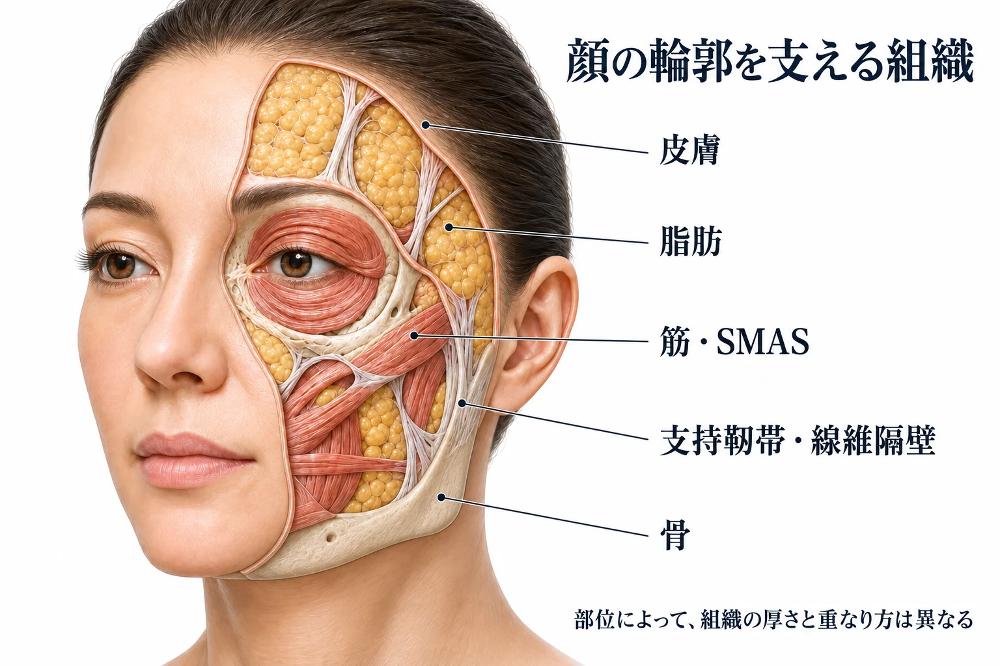
支持靭帯と線維隔壁が、軟部組織の位置を保つ
支持靭帯（retaining ligaments）は、骨や深部筋膜と軟部組織をつなぎ、顔の各部位を固定します。脂肪の中には線維隔壁（retinacula cutis）の網目があり、脂肪を区切りながら皮膚と深部をつないでいます。これらは層をまたいで組織を支える構造です。
靭帯による固定が強い部位と、その間の動きやすい部位があります。この違いが、加齢した顔の溝や膨らみを理解するうえで重要です（Furnas, 1989）。
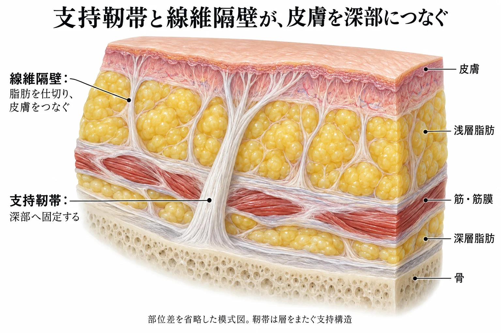
主な支持靭帯の位置と名称を整理します。
- 涙溝靭帯（tear trough ligament：TTL）：目の下の内側で、上顎骨から皮膚へつながります。外側では眼輪筋保持靭帯（orbicularis retaining ligament：ORL）へ連続し、下眼瞼と頬の境界の支持を担います（Wongら, 2012）。
- 頬骨皮膚靭帯（zygomatic cutaneous ligament：ZCL）：中頬部で、上顎骨・頬骨の骨膜から皮膚へつながります。外側では頬骨弓の頬骨支持靭帯へ連続します。本章では、この連続した支持構造の中頬部側と頬骨弓側を呼び分けています（Duanら, 2022）。
- 上顎靭帯（maxillary ligament）：鼻唇溝側の中頬部にある支持構造です。上顎前方の軟部組織を区切る下方の境界に位置します（Wongら, 2013）。
- 咬筋皮膚靭帯（masseteric cutaneous ligaments）：咬筋部の深部筋膜からSMASへつながる、筋膜性支持の代表例です（Mirontsevら, 2024）。
- 下顎靭帯（mandibular ligament）：下顔面で、広頸筋・口角下制筋・下唇下制筋が下顎骨へ付着する深部の支持を指します。その上の皮下組織は、開口に合わせて動けるようになっています（Minelliら, 2023）。
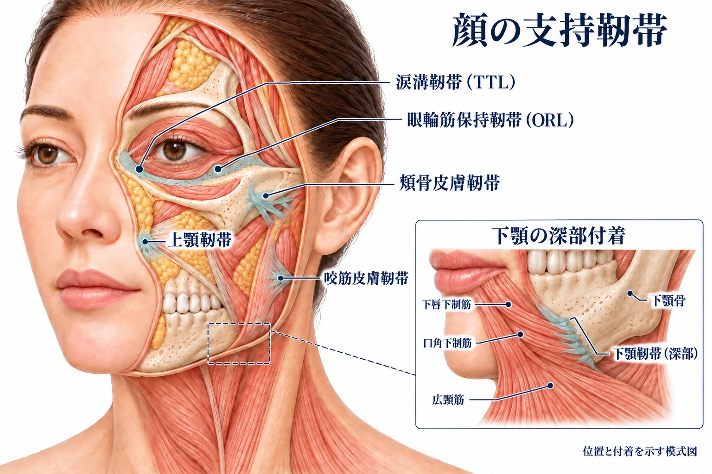
解剖の補足：真性靭帯・仮性靭帯と線維の連続
骨・骨膜に起始する支持を真性（骨性）、深部筋膜に起始する支持を仮性（筋膜性）と呼ぶ分類があります。頬骨部は骨性支持、咬筋部は筋膜性支持の代表例です。「仮性」は支持力の強弱を表す言葉ではありません（Mirontsevら, 2024）。
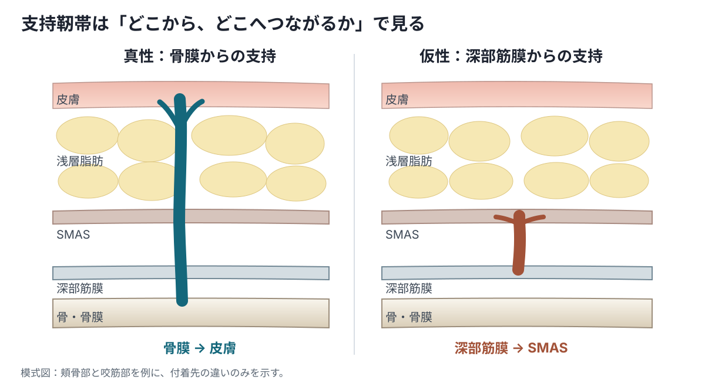
靭帯の名称と分類は、文献によって異なります。下顎靭帯も、古典的な骨皮膚靭帯として記載するものと、筋の深部付着として捉えるものがあります。本章では、ジョールとの関係を直接調べたMinelliらの解剖に沿って説明します（Furnas, 1989、Minelliら, 2023）。
2 骨の吸収・リモデリングで、顔の土台が変わる
顔面骨は吸収と形成を繰り返しながら形を維持しています。加齢に伴って骨の吸収が進む部位では、眼窩や梨状孔の開口部が広がり、上顎前面の突出や下顎の高さが減るなど、軟部組織を支える骨の形が変わります（Shawら, 2011、Karunanayakeら, 2017）。
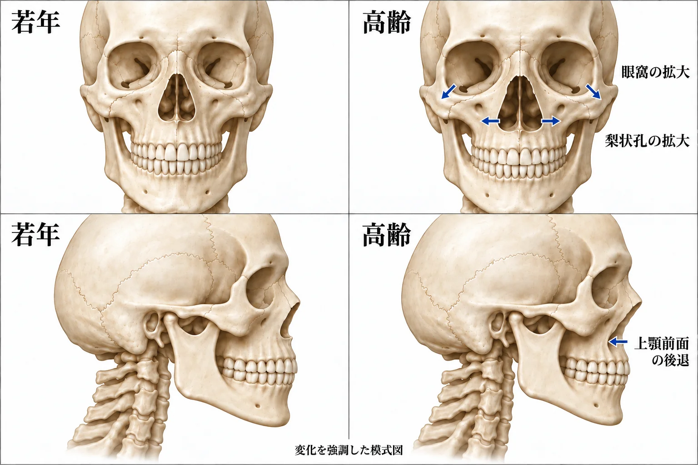
眼窩周囲：とくに上内側・下外側の骨縁で吸収が起こり、眼窩開口部が広がります。眼窩縁の骨性支持が減ると、眼瞼と頬の境界を支える形も変わり、頬側の脂肪の減少と合わせて、目の下の凹みや段差が目立ちます。
上顎・梨状孔周囲：上顎前面が後退し、鼻の骨性開口部である梨状孔が拡大すると、頬や鼻基部の軟部組織を前方へ支える働きが弱まります。深部脂肪の減少も重なると、頬の前方への丸みが失われ、鼻基部の凹みと鼻唇溝周囲の段差が目立ちます。
下顎：長さ・高さが減り、下顎角が大きくなると、下顔面の骨性支持が変わります。下顎縁を覆う軟部組織に余剰や下垂が重なると、輪郭が不明瞭になります。歯を失った場合には歯槽骨の吸収も加わりますが、これは加齢だけによる変化とは分けて考えます。
3 脂肪のボリュームと分布が変わる
顔の脂肪は、浅層・深層の複数のコンパートメント（区画）に分かれ、頬などの丸みを作っています。浅層脂肪を区切る線維隔壁は、筋膜と皮膚をつなぐ支持構造でもあります。線維隔壁と周囲の支持靭帯、筋への付着が、脂肪の形を保ち、動ける範囲を制限します（Rohrich・Pessa, 2008）。
加齢変化には、区画内の脂肪量が減る変化と、区画の位置や内部の分布が変わる変化があります（→ 脂肪）。
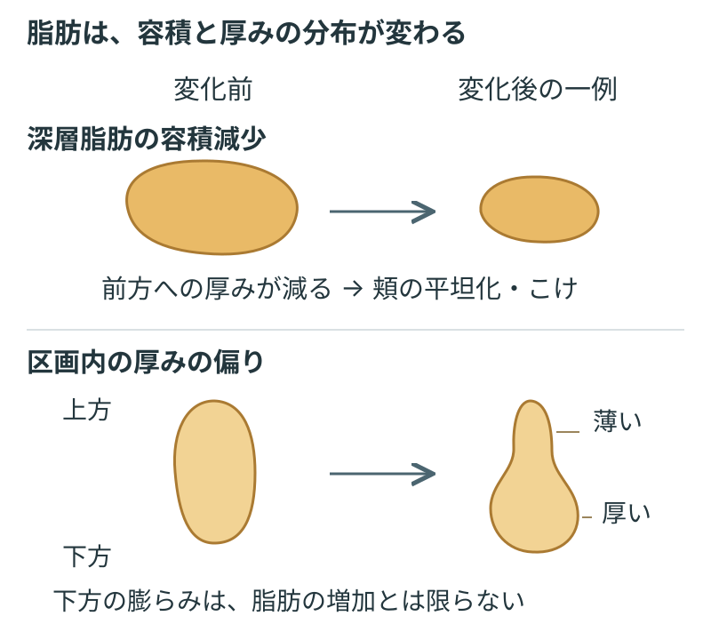
深部脂肪が減ると、頬の丸みが失われる
深内側頬脂肪などでは、加齢に伴う容積減少が報告されています。頬を前方へ膨らませていた脂肪が減ると、頬は平坦になり、こけて見えます。その上や隣に浅層脂肪が残ると、凹んだ部位との段差が目立ちます（Gierloffら, 2012）。
頬では、脂肪の分布の変化で凹みと膨らみが生じる
加齢した中顔面では、脂肪区画が下方に位置し、区画の上部が薄く、下部が厚いという変化がみられます。上部の凹みと下部の膨らみの差が大きくなり、頬の輪郭が変わります（Gierloffら, 2012）。
4 筋の厚み・下支え・収縮によって、顔の形が変わる
表情筋は顔のボリュームの一部を占め、収縮によって皮膚を動かします。筋の働き方は、筋自体の状態に加え、周囲の骨・脂肪による下支えの状態によっても変わります。
上眼瞼では、眼輪筋の菲薄化もくぼみの一因になる
上眼瞼では、加齢に伴って眼輪筋が薄くなり、上眼瞼のくぼみとの関連が示されています。骨や脂肪に加えて、筋のボリュームロスも凹みの一因になり得ます（Gomiら, 2025）。
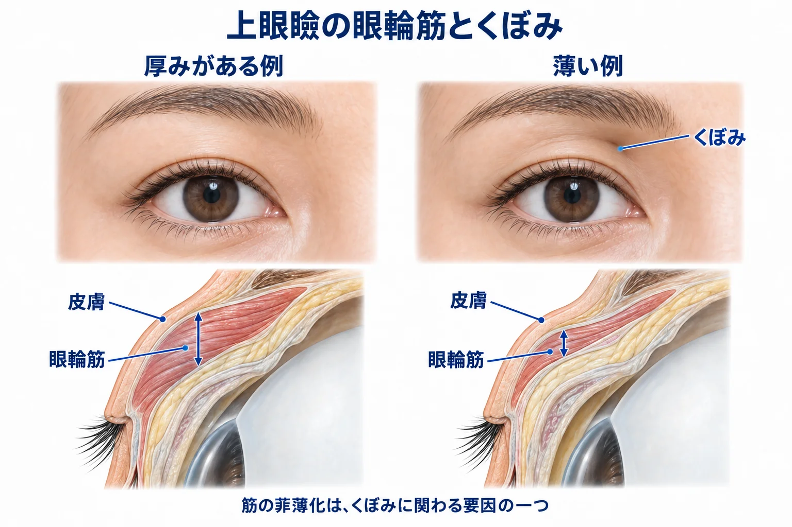
下支えが変わると、収縮による皮膚の動きも変わる
筋は、骨や脂肪に支えられながら皮膚へ力を伝えます。筋を下支えする骨や脂肪のボリュームが減ると、筋の走行や周囲との位置関係が変わり、同じ収縮でも皮膚を動かす方向や範囲が変わり得ます。
臨床への接続：マイオモデュレーション
この下支えを補って筋の動きを変えようとする考え方が、マイオモデュレーション（myomodulation）です。筋の下に支点を補い、てこの働きを変えるというモデルが提案されています（de Maio, 2018、Casabonaら, 2025）。具体的な治療の説明はヒアルロン酸フィラーの生化学で扱います。
筋の収縮が、溝や折れ込みを加える
口角下制筋は口角を下げ、広頸筋は下顔面を下方へ牽引します。口角周囲では、こうした収縮が皮下の線維構造を介して皮膚へ伝わり、溝や折れ込みを加えます（Zhangら, 2025）。安静時のこけ・下垂と、表情によって加わる変形を分けて捉えると、ボリューム・支持の問題と筋の動きの問題を整理できます（→ 筋肉）。
5 皮膚の弾力が低下し、余剰や折れ込みが目立つ
真皮のコラーゲンは皮膚に強度を与え、弾性線維は伸びた皮膚が戻る働きを支えます。加齢によってコラーゲン合成が低下し、真皮のコラーゲンが減ります。線維の断片化も加わり、皮膚を支える構造が弱まります（Liら, 2015、Fisherら, 2009）。
弾性線維も加齢や光老化で変化し、皮膚の弾力が低下します（→ 弾性線維と膠原線維・線維芽細胞とコラーゲン）。
骨や深部脂肪のボリュームが減ると、それらを覆っていた皮膚が相対的に余ります。皮膚の弾力低下も重なると、伸びたり折れたりした後に戻りにくくなり、緩みや折れ込みが目立ちます。
詳しく読む：コラーゲンの断片化が、線維芽細胞にも影響する
線維芽細胞は、周囲のコラーゲン線維を引っ張り、その抵抗を受けながら形と働きを保っています。コラーゲンが断片化すると、その抵抗が減り、細胞が十分に伸展できなくなります。ヒト皮膚と培養系の研究では、この状態が酸化ストレスとMMP-1の増加につながり、さらにコラーゲンの分解を進める機序が示されています（Fisherら, 2009）。詳しい合成・分解経路は線維芽細胞とコラーゲンで扱います。
6 支持の低下と固定部との段差が、下垂・溝・膨らみを作る
顔の支持を考えるときは、太い支持靭帯と、脂肪内に広がる細かな線維の網目を分けます。強い付着が残る部位と、周囲の緩んだ組織との位置関係が重要です。
加齢に伴う支持の低下は、すべての靭帯が伸びることを意味しません。ヒトの靭帯には、年齢による長さや力学的性質の差が認められないものもあります（Brandtら, 2012）。
線維隔壁の支持が低下すると、皮下組織が変形しやすくなる
線維隔壁の網目は、脂肪と皮膚を支えています。この網目が疎な部位ほど、皮下組織の弾性が低く、顔のたるみが強いという関連があります（Sakataら, 2018）。網目による支持が低下すると、皮膚と脂肪は荷重や筋の動きで変形しやすくなります。重力は軟部組織に下向きの荷重をかけ、支持が弱まった組織では下垂を助長します。
固定の強い部位と、周囲の動きやすい組織に段差ができる
支持靭帯や筋への付着が強い部位では、周囲より皮膚の動きが制限されます。その周囲の脂肪が減ったり、皮膚・皮下組織が下垂したりすると、固定部との高さの差が大きくなり、溝と隣の膨らみが目立ちます。中頬部では頬骨皮膚靭帯、口元では筋と皮膚の付着が、こうした境界を作ります（Duanら, 2022、Minelliら, 2023）。
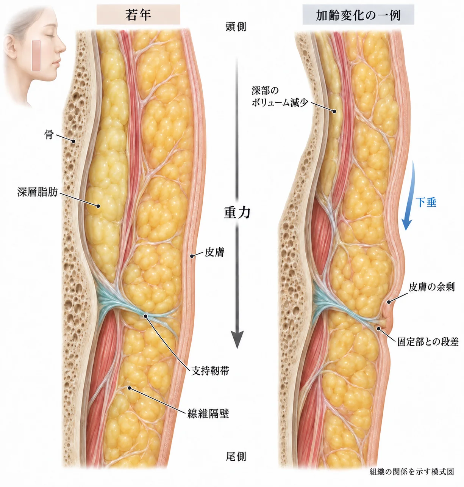
口横では、皮膚と皮下組織の余剰・下垂がジョールを作る
口横から下顎縁にかけての膨らみをジョール（jowl）と呼びます。下顎靭帯の深部付着の上では、皮膚と皮下組織が開口や表情に合わせて動けるようになっています。加齢に伴って皮下の結合組織が伸長し、皮膚と皮下組織に余剰が生じると、下顎縁に垂れ込む膨らみが形成されます（Minelliら, 2023）。
内側の口元では、口角下制筋などが皮膚へ強く付着しています。脂肪の厚い外側の頬との境界に、筋の収縮による折れ込みが加わると、口角から下方へ続くマリオネットラインが目立ちます。この表面の境界は筋と皮膚の付着によるもので、深部にある下顎靭帯とは区別します（Minelliら, 2023、Zhangら, 2025）。
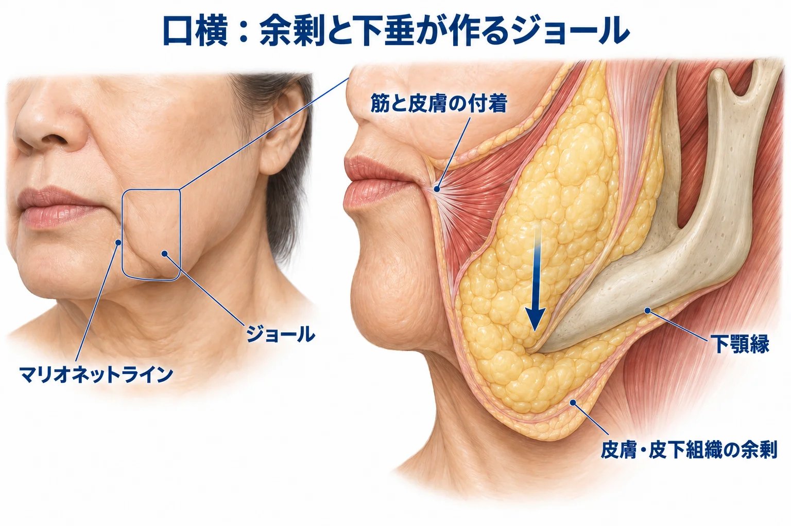
7 眼周囲・鼻唇溝・下顎縁に、各組織の変化が重なる
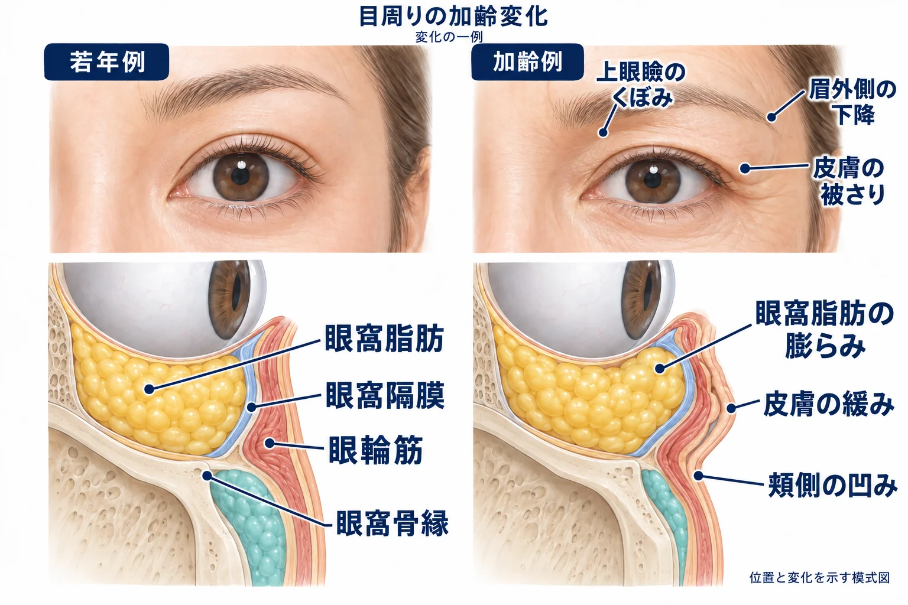
上眼瞼では、皮膚の被さりとくぼみが重なる
上眼瞼の皮膚が弾力を失い、緩んで余ると、睫毛側へ被さり、二重のラインが隠れるようになります。この皮膚の弛緩・余剰が眼瞼皮膚弛緩症（dermatochalasis）です。皮膚の被さりと、上眼瞼縁そのものが下がる眼瞼下垂は区別します（Nagiら, 2011）。
眉の位置も、上眼瞼の見え方を変えます。とくに眉の外側が下がると、その下の皮膚が上眼瞼へ被さり、外側の重さが目立ちます（Parkら, 2017）。
皮膚の余剰と、その下のボリューム減少が重なると、被さりとくぼみが同じ上眼瞼に現れます。くぼみの背景には、筋の節で述べた眼輪筋の菲薄化もあります（Gomiら, 2025）。
下眼瞼では、膨らみ・凹み・皮膚の緩みが重なる
眼窩脂肪が前方へ突出すると、目の下が膨らむ
下眼瞼の膨らみの一因は、眼球の周囲にある眼窩脂肪の前方への突出です。眼窩脂肪の前面を支える膜を、眼窩隔膜と呼びます。隔膜や周囲の支持の緩み、眼窩骨縁の変化、眼窩脂肪の量の変化が重なって、眼窩脂肪が前方へ突出します（Darcyら, 2008、Kimら, 2018）。
頬側の支えが減ると、膨らみの下に凹みが目立つ
涙溝靭帯・眼輪筋保持靭帯は、下眼瞼と頬の境界を固定しています。眼窩骨縁の吸収と頬側の脂肪の減少が重なると、境界の周囲が低くなり、涙溝や眼瞼と頬の段差が目立ちます（Wongら, 2012）。
眼窩脂肪の膨らみのすぐ下に涙溝や頬の凹みがあると、高低差と陰影が強まり、目の下の膨らみがさらに目立ちます。
皮膚とその支持が緩むと、しわや余剰が加わる
下眼瞼の皮膚も弾力を失い、しわや余剰が生じます。皮膚と眼輪筋を結ぶ細かな線維や、眼輪筋の下にある支持組織が変化すると、皮膚と筋を支える構造が緩みます（Iwanami・Tsurukiri, 2007）。眼窩脂肪の膨らみ、頬側の凹み、皮膚の緩みが重なって、下眼瞼のたるみになります。
鼻唇溝では、口元の付着と頬側の厚みが段差を作る
鼻唇溝の内側では、上唇を動かす筋が皮膚へ強く付着しています。その外側の頬では皮下脂肪が厚く、皮膚とともに動けます。上顎骨や深部脂肪のボリュームが減り、外側の皮下組織に下垂が加わると、口元との段差が大きくなり、溝とその外側の膨らみが目立ちます（Minelliら, 2023）。
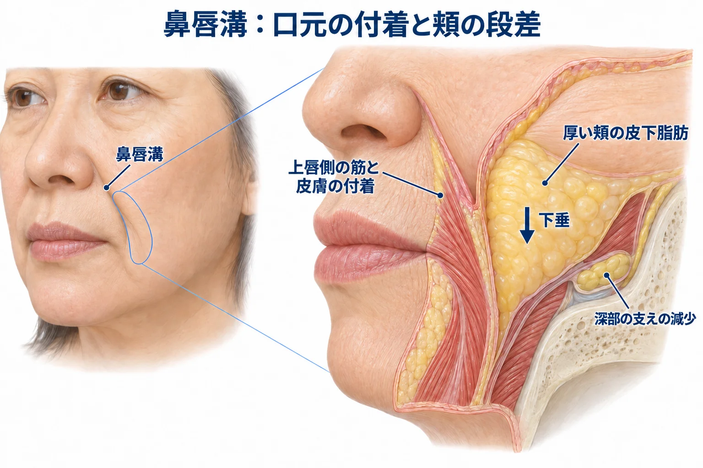
頬のこけと口横の重さを、顔全体の変化として捉える
頬がこける一方で口横が重くなる顔では、ボリュームが失われる部位と、余剰が垂れ込む部位が異なります。凹んだ頬、口横の膨らみ、その間の溝を別々に見るだけでなく、ボリュームロス・支持低下・皮膚の緩みが、顔全体でどう重なっているかを捉えます。表情を作ったときの変化も合わせると、筋の収縮によって加わる折れ込みも把握できます。
顔全体で見る凹みと膨らみ
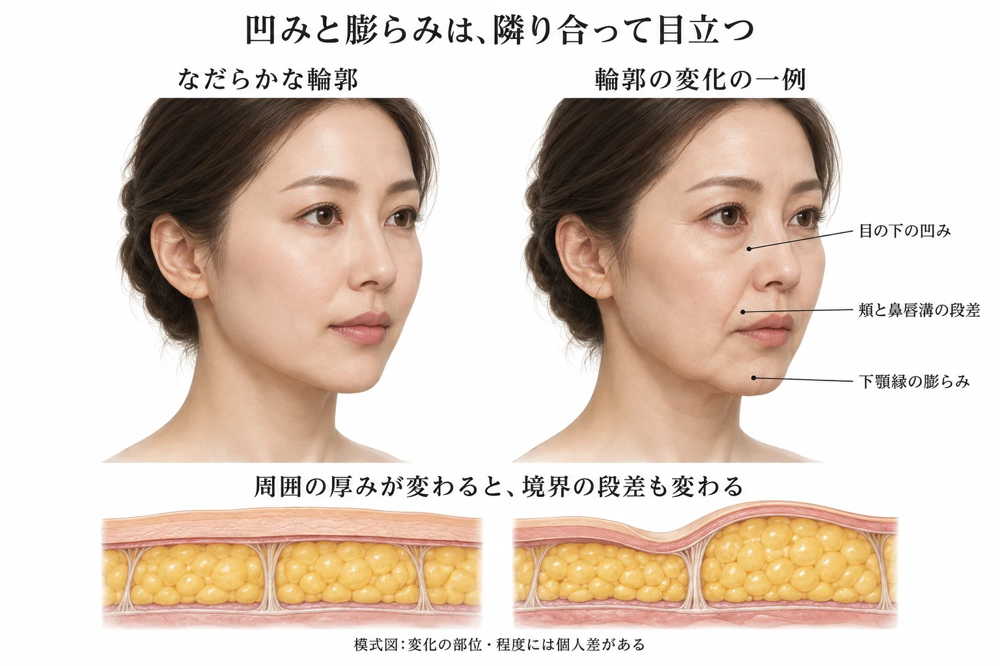
たるみ治療が難しいのは、複数の層の変化が重なり、互いの支えや位置関係まで変わっているためです。一つの層を改善しても、ほかの層の変化が残る場合があります。さらに、治療後も加齢による変化が続き、重力や日々の表情運動も作用し続けます。治療の詳しい説明はヒアルロン酸フィラーの生化学・熱・光・機械刺激・ボツリヌストキシンの生化学で扱います。
この章の到達点
- 顔の骨・脂肪・筋／SMAS・皮膚と、支持靭帯の位置関係を説明できます。
- ボリュームロス、線維隔壁などの支持低下、皮膚の弾力低下と余剰を、顔のこけや下垂につなげて考えられます。
- 安静時の形と、筋の収縮によって変わる形を区別できます。
- 目立つ溝や膨らみを、その部位だけでなく、周囲の厚み・固定・動きと合わせて捉えられます。
中核参考文献
- Furnas DW. The retaining ligaments of the cheek. Plast Reconstr Surg. 1989;83:11–16. PMID 2909050.
- Rohrich RJ, Pessa JE. The retaining system of the face: histologic evaluation of the septal boundaries of the subcutaneous fat compartments. Plast Reconstr Surg. 2008;121:1804–1809. PMID 18454006.
- Mirontsev A, et al. Clinical anatomy of the ligaments of the face and their fundamental distinguishing features. Medicina (Kaunas). 2024;60:681. PMID 38792865.
- Shaw RB Jr, et al. Aging of the facial skeleton: aesthetic implications and rejuvenation strategies. Plast Reconstr Surg. 2011. PMID 20871486.
- Gierloff M, et al. Aging changes of the midfacial fat compartments: a computed tomographic study. Plast Reconstr Surg. 2012;129:263–273. PMID 21915077.
- Gierloff M, et al. The subcutaneous fat compartments in relation to aesthetically important facial folds and rhytides. J Plast Reconstr Aesthet Surg. 2012;65:1292–1297. PMID 22658728.
- Gomi T, et al. Age-related thinning of orbicularis oculi muscle inside upper eyelid and its possible association with sunken upper eyelids. Sci Rep. 2025;15:4538. PMID 39915641.
- Nagi KS, Carlson JA, Wladis EJ. Histologic assessment of dermatochalasis: elastolysis and lymphostasis are fundamental and interrelated findings. Ophthalmology. 2011;118:1205–1210. PMID 21211847.
- Park J, Yun S, Son D. Changes in eyebrow position and movement with aging. Arch Plast Surg. 2017;44:65–71. PMID 28194350.
- Fisher GJ, et al. Collagen fragmentation promotes oxidative stress and elevates matrix metalloproteinase-1 in fibroblasts in aged human skin. Am J Pathol. 2009;174:101–114. PMID 19116368.
- Li Y, et al. Age-associated increase in skin fibroblast-derived prostaglandin E2 contributes to reduced collagen levels in elderly human skin. J Invest Dermatol. 2015;135:2181–2188. PMID 25905589.
- Wong CH, et al. The tear trough ligament: anatomical basis for the tear trough deformity. Plast Reconstr Surg. 2012;129:1392–1402. PMID 22634656.
- Darcy SJ, et al. Magnetic resonance imaging characterization of orbital changes with age and associated contributions to lower eyelid prominence. Plast Reconstr Surg. 2008;122:921–929. PMID 18766060.
- Kim J, et al. Ageing of the bony orbit is a major cause of age-related intraorbital fat herniation. J Plast Reconstr Aesthet Surg. 2018;71:658–664. PMID 29273552.
- Iwanami M, Tsurukiri K. Histological comparison between young and aged specimens of the Oriental lower eyelid using sagittal serial sections. Plast Reconstr Surg. 2007;119:2061–2071. PMID 17519701.
- Duan J, et al. Clarifying the anatomy of the zygomatic cutaneous ligament: its application in midface rejuvenation. Plast Reconstr Surg. 2022;149:198e–208e. PMID 35077411.
- Wong CH, Mendelson B. Facial soft-tissue spaces and retaining ligaments of the midcheek: defining the premaxillary space. Plast Reconstr Surg. 2013;132:49–56. PMID 23508054.
- Sakata A, et al. Relationship between the retinacula cutis and sagging facial skin. Skin Res Technol. 2018;24:93–98. PMID 28868761.
- Brandt MG, et al. Biomechanical properties of the facial retaining ligaments. Arch Facial Plast Surg. 2012;14:289–294. PMID 22351846.
- Minelli L, et al. The surgical anatomy of the jowl and the mandibular ligament reassessed. Aesthetic Plast Surg. 2023;47:170–180. PMID 36050569.
- Minelli L, et al. Lifting the anterior midcheek and nasolabial fold: introduction to the melo fat pad anatomy and its role in longevity and recurrence. Aesthet Surg J. 2023;43:941–954. PMID 37130080.
- Zhang M, et al. The labiomandibular fold anatomy for comprehensive lower facial rejuvenation: a micro-computed tomography investigation. Aesthetic Plast Surg. 2025;49:2905–2914. PMID 39806136.